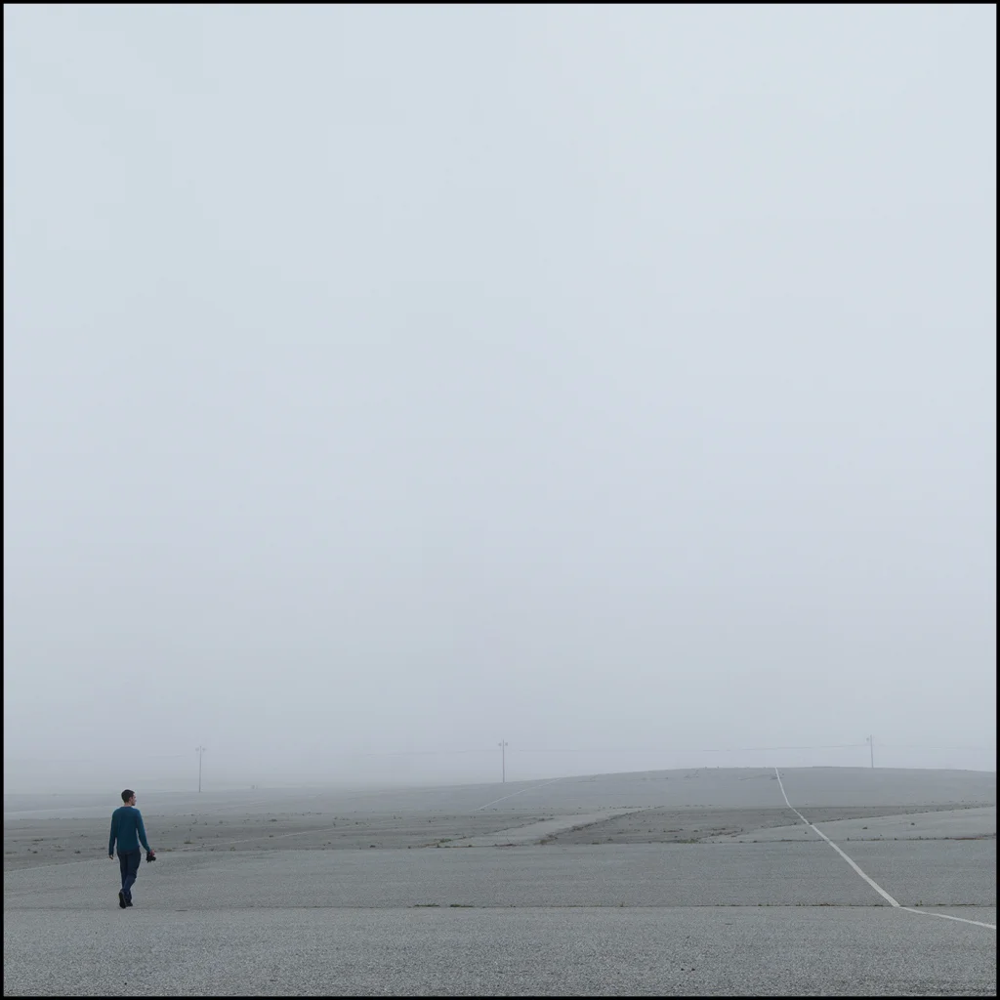
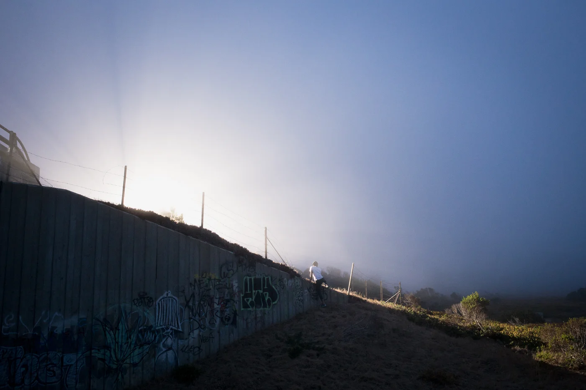
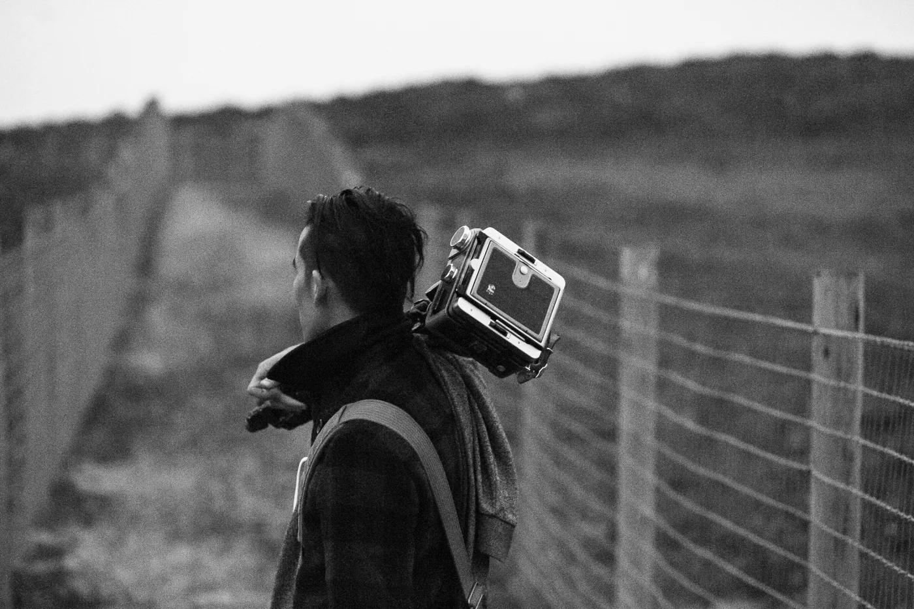
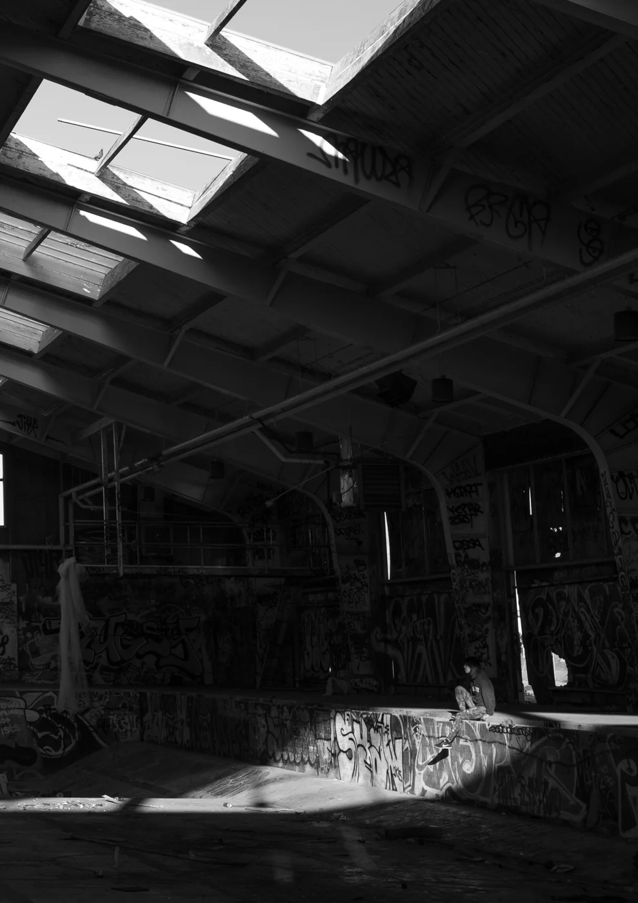
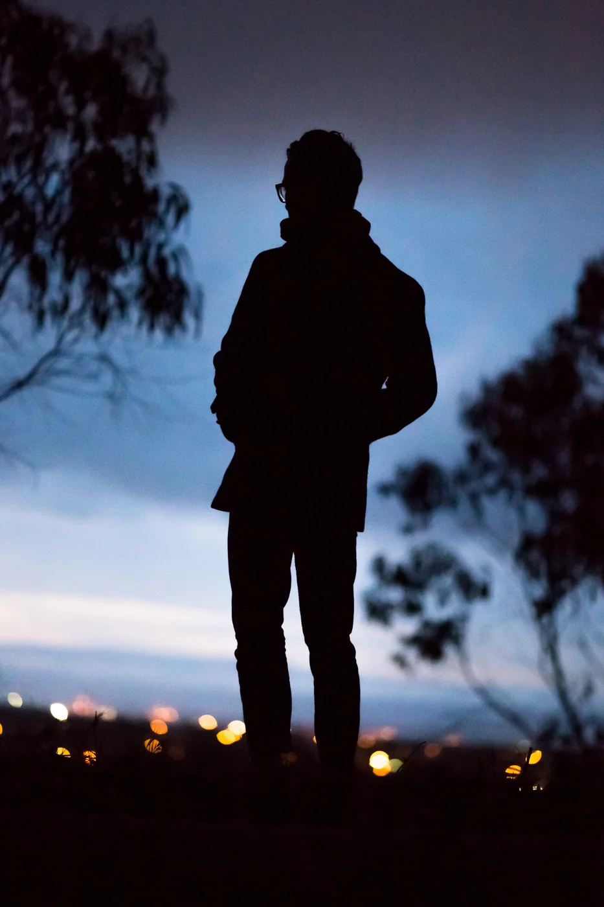
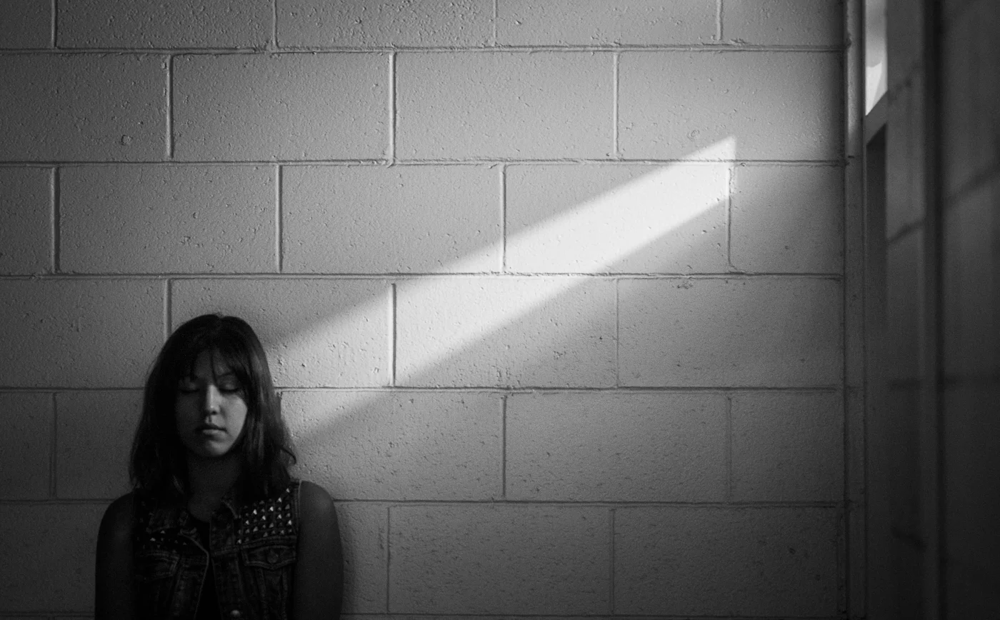

Graduation
After 17 years of education, I now have a Bachelors Degree in Studio Art with a focus in photography! Yes I'm counting kindergarten, because alphabets are imperative to every day life. That said, art school did an amazing thing and opened up doors I'd never thought were anything I wanted. I was an engineering student until three years ago, and now I've got this huge thing called life after college in front of me, and I have so many people to thank. I'll not bore you by starting at pre-K, but I just wanted to mention some of the amazing professors at Humboldt State University that helped put me where am. First, my photography professor, mentor, and now friend for my entire stay at HSU, Nicole Jean Hill. My professor and friend, Dave Woody taught me first how to make cyanotypes and eventually how to keep my drive for photography going; his critique is always insightful and his philosophies regarding photography are what I would consider an essential tool for photography and documentary projects in general. Last, two graphic design professors, Rick Febre and Kasey Vaughn who taught me the basics of graphic design, were influential in my design process, gave insight into my photography, and provided a space where I could learn and build community in the art department.


That was the short list, if we get long I would also attribute the profound change in my art work to the past teachers and mentors I met at CSU summer arts in 2014 and 2015. They're amazing photographers, and wonderful teachers who opened up art as a possibility for me. Nicole J. Hill, Doug Dertinger, Holly Andres, David H. Wells, Erika Gentry, David Hilliard. Above are images from the first session, and below are a few from the second.





